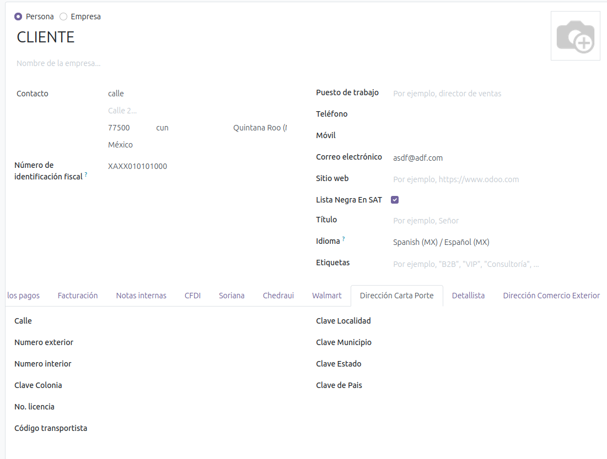
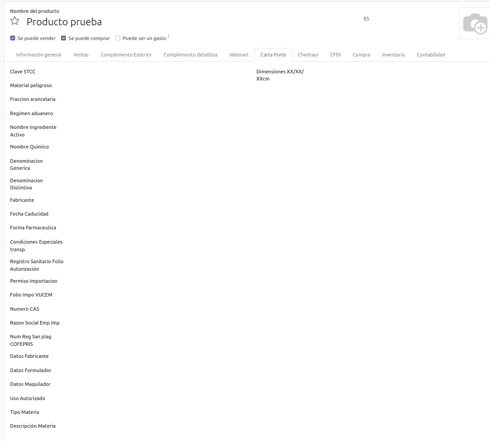
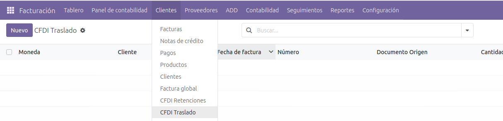
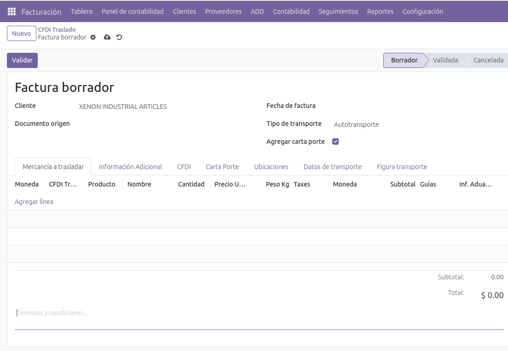
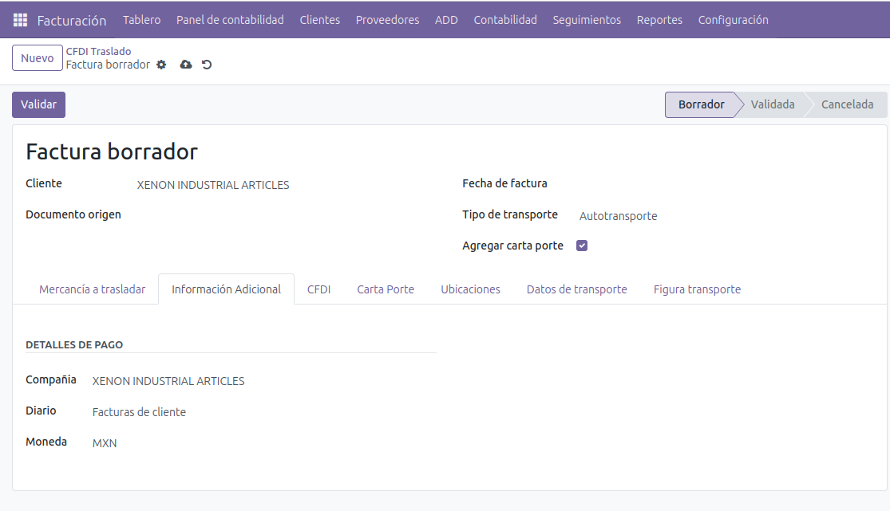
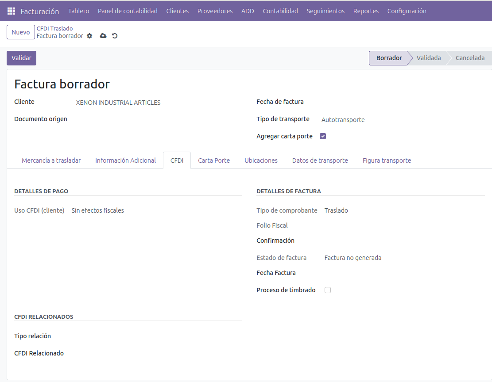
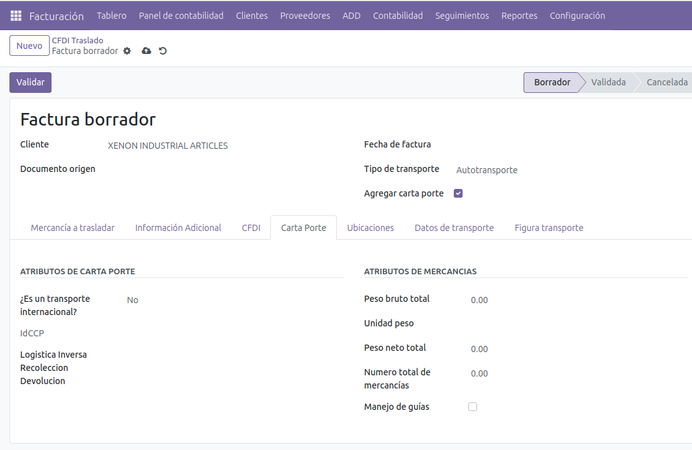
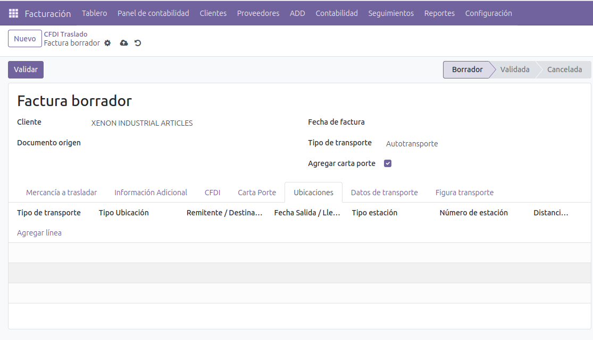
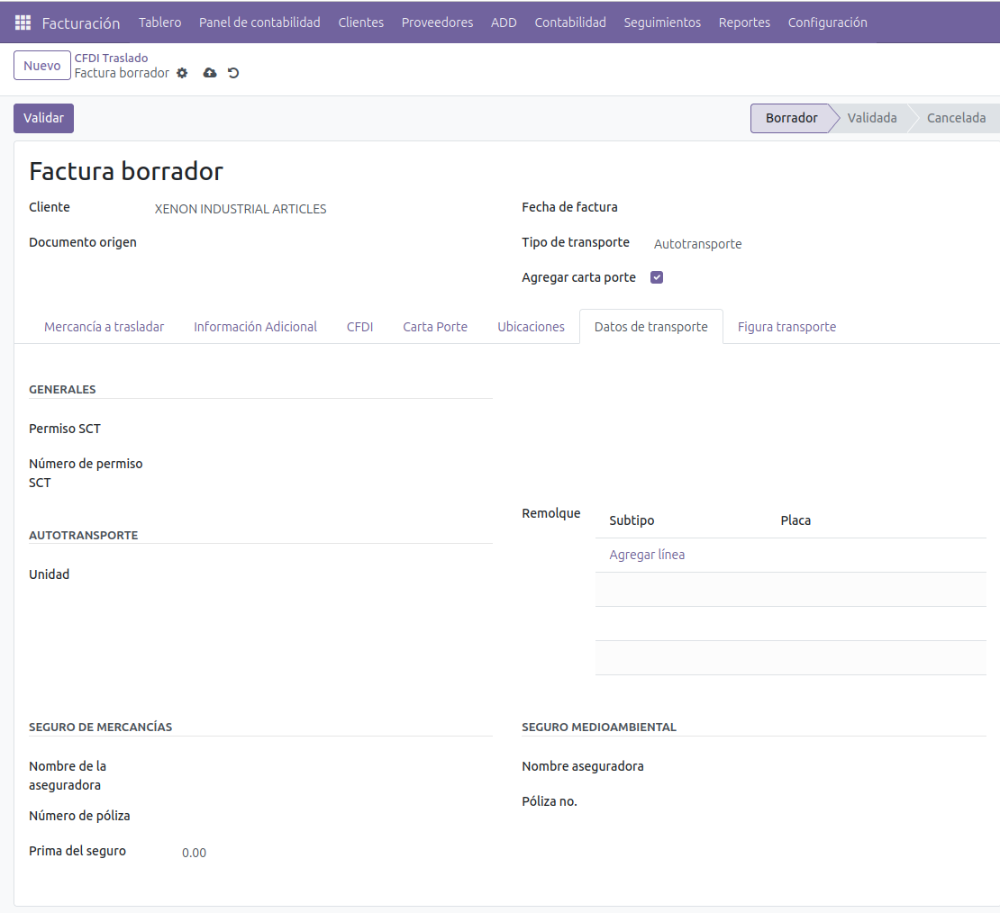
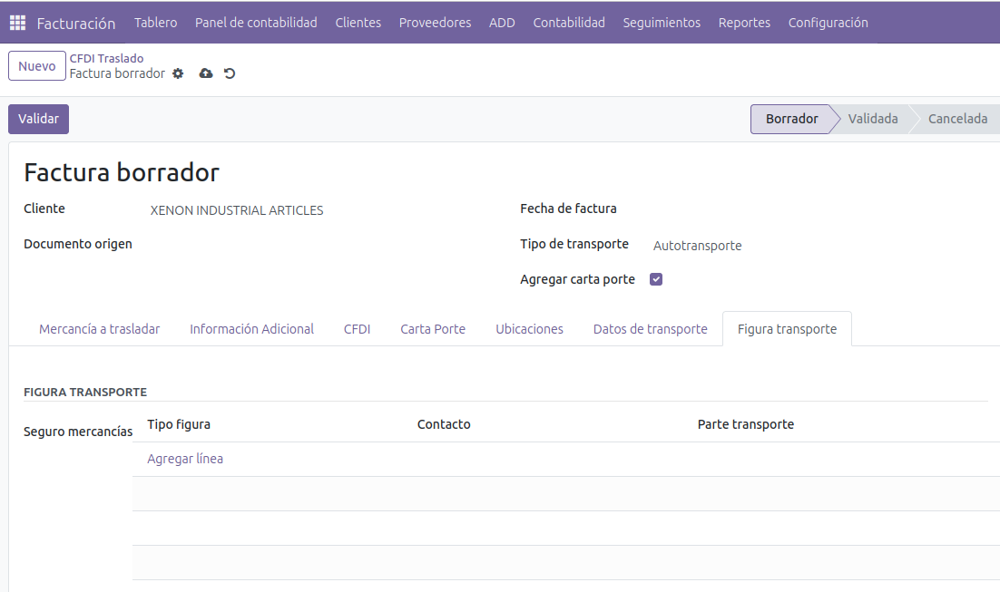

CFDI tipo Traslado con carta porte
Se debe configurar los contactos con la información "Dirección Carta Porte" de acuerdo a los catálogos del SAT.

- A los productos se le puede configurar inforamción adicional para el timbrado carta porte (depende del producto si es requerido).

- Los documentos de traslado se generan en la pestaña "CFDI Traslado"

- En la pestaña "Mercancías a trasladar" se ingresan las mercancías.

- En la pestaña "Información adicional" es solo informativa, los documentos no generan pólizas.

En la pestaña "CFDI" muestra la información fiscal, es solo informativa.

En la pestaña "Carta Porte" se configura el tipo de carta porte y se agregan los atributos de las mercancías.

En la pestaña "Ubicaciones" se agregan las ubicaciones origen y destino de la ruta de transporte.

En la pestaña "Datos del transporte" se agrega el permiso SCT, la unidad a utilizar en el transporte y seguros (opcionales).

En la pestaña "Figura de transporte" se agregan los tipos de figura requeridos para el traslado.

Este manual es una guía básica de las funcionalidades básicas del módulo. Para recibir asesoría
sobre sus dudas adicionales o una capacitación detallada, puede contratar consultoría.